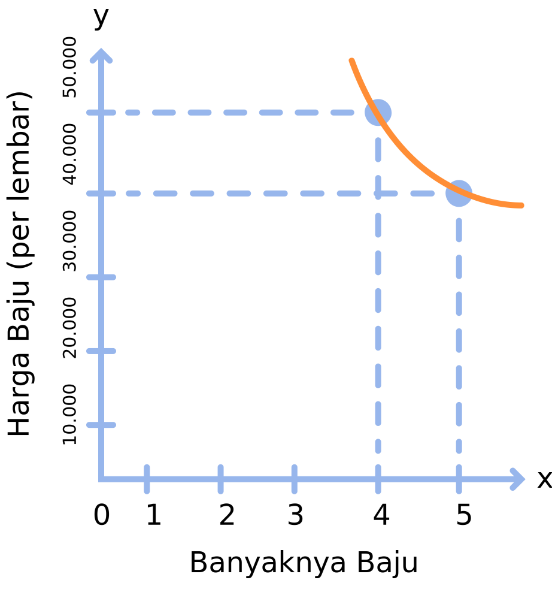

index
index Kembali
KembaliPerbandingan Berbalik Nilai
Nonton, Yuk!
Agar kamu bisa lebih memahami materi pada halaman sebelumnya, yuk kita tonton dulu video di bawah ini!
Suci ingin membeli 5 lembar baju di pasar. Harga untuk selembar bajunya adalah Rp40.000,00. Jika Suci mempunyai uang yang cukup untuk membeli 5 baju dan ternyata harga selembar baju adalah Rp50.000,00, maka berapa banyak baju yang akan ia peroleh?
→ Penyelesaian
• Diketahui :
1 lembar baju = Rp
Suci mempunyai uang yang cukup untuk membeli 5 baju dan ternyata harga selembar baju adalah Rp =
• Ditanyakan :
Berapa banyak baju yang akan ia peroleh dengan uang yang dimiliki?
• Jawaban :
Pertama, buatlah terlebih dahulu tabel untuk mendata hal yang sudah kita dapatkan pada soal. Anggap variabel “x”sebagai banyaknya baju dan variabel “y” sebagai harga baju, dan tabelnya akan seperti ini:
| Banyaknya Baju (x) |
Harga Baju (per lembar) (y) |
|---|---|
| 5 | 40.000 |
| x | 50.000 |
Lalu, gunakan bentuk persamaan $\frac{x_1}{x_2}\frac{y_2}{y_1}$ untuk mencari nilai x pada banyaknya baju.
Kita misalkan $x_1 = 5,\;x_2 = x$, maka : $y_2 = 50.000,\;y_1 = 40.000.$
$$\frac{x_1}{x_2} = \frac{y_2}{y_1}$$ $$\frac{5}{x} = \frac{50.000}{40.000}$$ Lakukan perkalian silang antara kedua perbandingan di atas. $$x \times 40.000 = 5 \times 50.000$$ $$x = \frac{200.000}{50.000}$$ $$x = 4$$ Jadi, jika harga selembar bajunya adalah Rp50.000,00, maka Suci akan mendapatkan 4 lembar baju.
Berdasarkan data yang sudah diperoleh pada contoh soal pertama, buatlah grafik perbandingan senilainya!
→ Penyelesaian
• Diketahui :
Uang yang dimiliki Suci =
Jika membeli baju seharga Rp40.000,00 = baju
Jika membeli baju seharga Rp50.000,00 = baju
• Ditanyakan :Buatlah grafik perbandingan berbalik nilainya!
• Jawaban :
Masukkan data yang sudah diperoleh pada tabel di bawah ini:
| Banyaknya Baju (x) |
Harga Baju (per lembar) (y) |
|---|---|
| 5 | 40.000 |
| 4 | 50.000 |
Lalu buatlah grafik perbandingan senilainya dengan titik koordinat (5, 40.000) dan titik koordinat (4, 50.000)..

Tampilan grafik perbandingan berbalik nilainya akan seperti di atas. Menghasilkan kurva yang melengkung jika kedua pasangan titik koordinatnya disambungkan.
Untuk mengasah ingatan serta pemahamanmu dan agar tidak cepat move on dengan materi, ayo kerjakan soal-soal latihan pada bagian “Coba, Yuk!”. Untuk melanjutkan pada bagian "Coba, Yuk!", silakan klik halaman 4 atau tombol Selanjutnya »